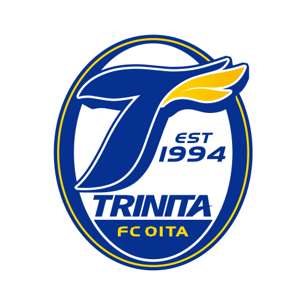
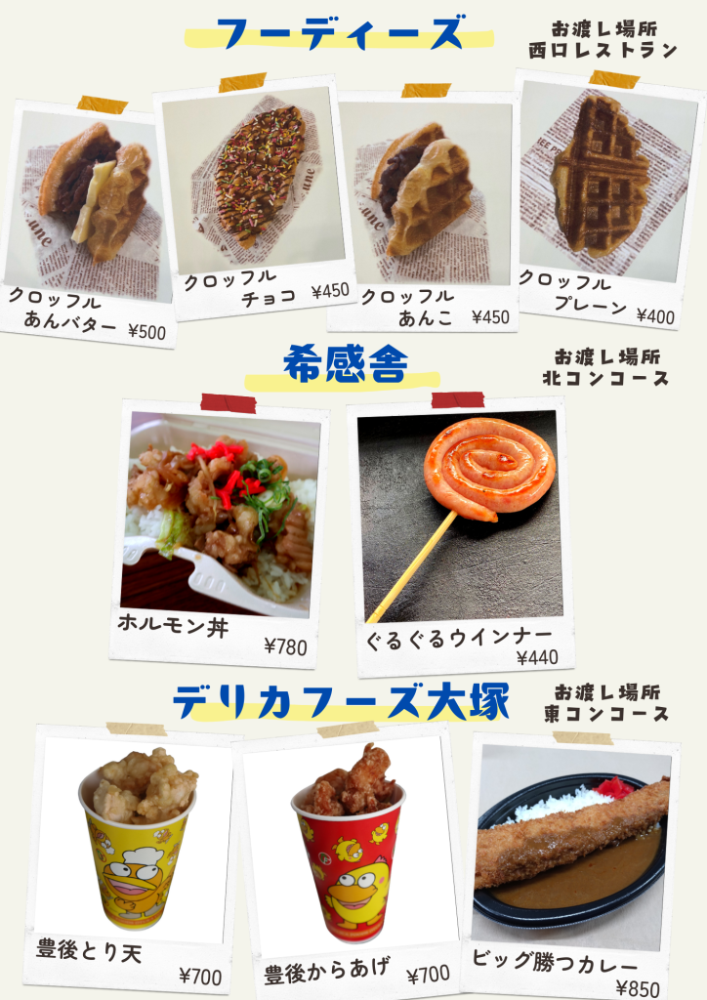
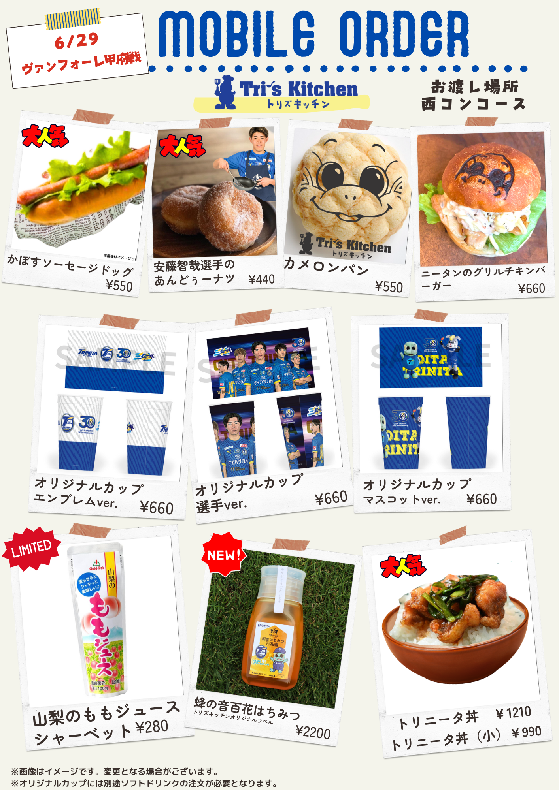
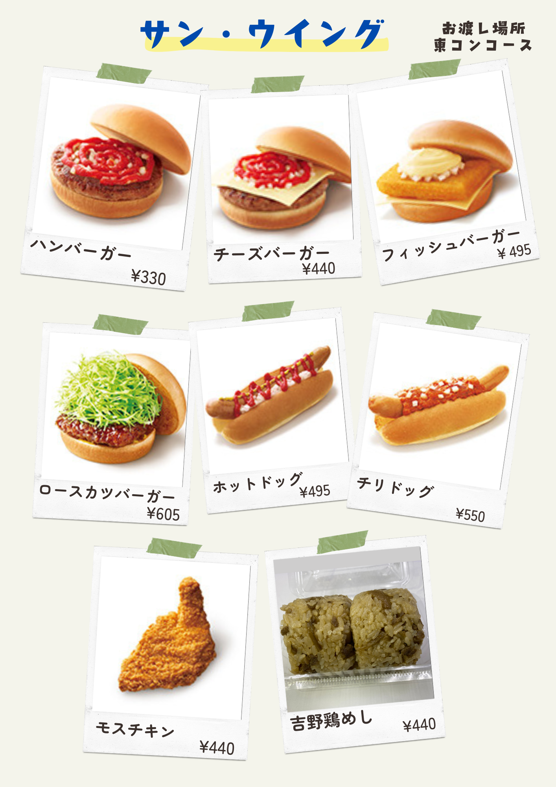
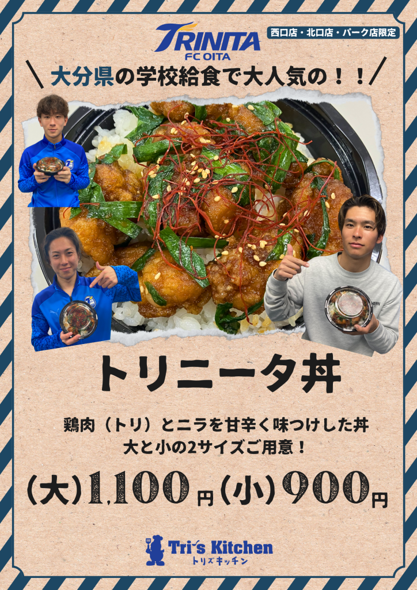
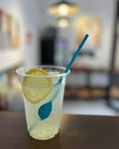
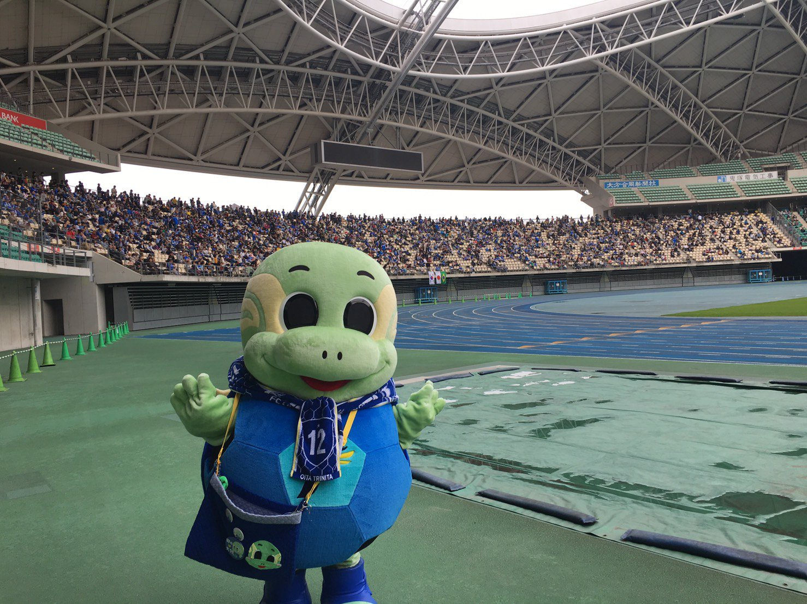
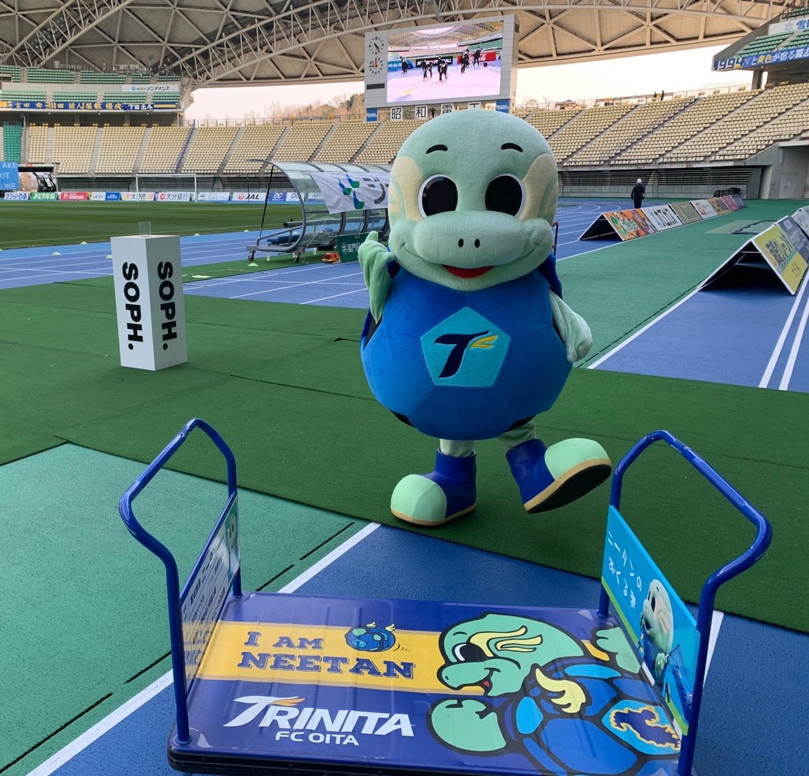
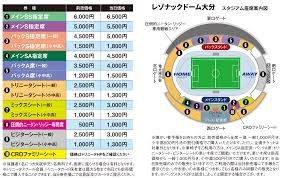

大分トリニータ
大分トリニータは現在Ｊ２に所属する大分県のプロサッカーチームです。
現在はＪ２ですがＪ１にいたことや天皇杯で準優勝したりヤマザキナビスコ杯で優勝したこともあります。
このホームページでは、サッカーが分からない人や大分トリニータのことを知らない人にも分かるように
スタジアム観戦の楽しさ、素晴らしさを紹介していきたいと思います。

選手紹介
まず紹介するのはMF１０野村直樹選手です！！大分トリニータに加入して５年目の選手で今のトリニータの攻撃の鍵になる選手です。テクニックがあり見ていてとてもわくわくする選手です！
熱い一面も持っていて見に行った時には注目してほしい選手の一人です！
次に紹介するのはMF２６保田堅心選手です！！
この選手はまだ１９歳で高校生の時から試合に出ていて世代別の日本代表にも選ばれているとてもすごい選手です！
もちろん将来を期待されていてサポーター、ファンの人たちみんなが楽しみにしています。
スタジアムグルメ
次はスタジアムの中で売っている食べ物通称スタグルを紹介していきます！
画像の中にある食べ物はもちろんその他にも沢山のものがたくさんあるので中でもおススメなものをいくつか紹介します。

まずはトリニータ丼です！大分県民なら小学校の給食などで食べたことがあると思います。
ピリ辛で大人っぽい味付けになってますが美味しいです！
大か小か選べて少ししか食べれないときでも安心です。
でも、人気商品なので売り切れの時も多いです。。。

次はレモネードです。
府内町に店がある農園きやさんのレモネードです。
ミシュラン掲載レストランをはじめ全国のレストランで使用される国産レモンを使ったレモネードで、
これからの暑い時期に飲むととてもおいしいです！
紹介した２つの物や今回のせた写真以外にもまだまだたくさんのスタグルがあるので是非会場に来て食べてみてください！
マスコット
このマスコットキャラクターはニータンと言います！ニータンはトリニータを紹介する上で外すことのできないマスコットです。
カメをモチーフにしたキャラクターでとても可愛くてトリニータのサポーターはもちろんＪリーグマスコット総選挙で４位になったこともあるくらいほかのチームのサポータにも人気があります！
足が短く歩くのが遅いので普段は中央の写真の台車に乗りそれを押してもらい移動します。
ニータン関連のグッズも沢山あるので可愛いと思った人はぜひ買ってあげてください！
座席表
アクセス
スタジアムへのアクセス方法は以下の通りです。
- 電車：大分駅からバスで約30分
- 車：大分ICから約10分 ※帰りは駐車場から出るまで時間がかかるので注意。
- シャトルバス：試合開催日に運行